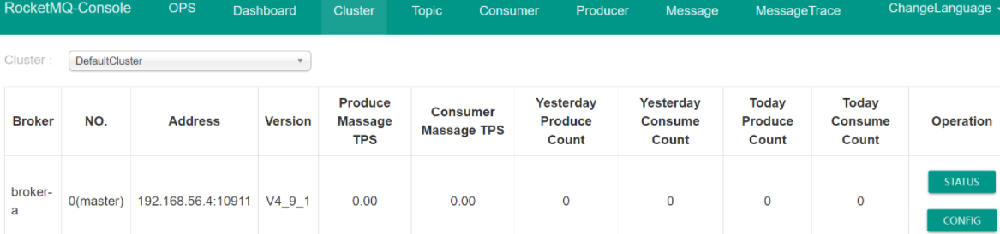
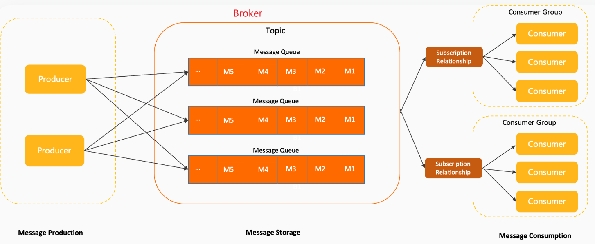

说明
我们使用 4.9.1版本
下载地址：https://github.com/apache/rocketmq/releases。
官网：https://rocketmq.apache.org/
RocketMQ由以下这几个组件组成：
- NameServer : 提供Broker路由服务
- Broker：实际处理消息存储、转发等服务的核心组件
- Producer：消息生产者(集群)
- Consumer：消息消费者(集群)
我们要启动RocketMQ服务，需要先启动NameServer。
我们先约定：
- 这里我们用docker安装
- namesrv、broker、rockermq-console 我们装在一同机器上
- 这里我们用 192.168.56.4 这台机器
namesrv安装
1
2
3
4
5
6
7
8
9
10
11
12
13
14
15
| #
docker pull apache/rocketmq:4.9.1
#
mkdir -p /opt/docker/rocketmq/data/namesrv/logs
# 构建namesrv容器
docker run -d \
--restart=always \
--name rmqnamesrv \
-p 9876:9876 \
-v /opt/docker/rocketmq/data/namesrv/logs:/home/rocketmq/logs \
-e "JAVA_OPT_EXT=-server -Xms64m -Xmx64m -Xmn32m" \
apache/rocketmq:4.9.1 \
sh mqnamesrv
|
broker安装
1
2
3
4
5
6
7
8
9
10
11
12
13
14
15
16
17
18
19
20
21
22
23
24
| # 创建broker数据存储路径
mkdir -p /opt/docker/rocketmq/data/broker/logs /opt/docker/rocketmq/data/broker/store /opt/docker/rocketmq/conf
# 创建配置文件
vi /opt/docker/rocketmq/conf/broker.conf
# 设置权限
chmod 777 /opt/docker/rocketmq/data/broker/logs
chmod 777 /opt/docker/rocketmq/data/broker/store
# 构建broker容器
docker run -d \
--restart=always \
--name rmqbroker \
--link rmqnamesrv:namesrv \
-p 10911:10911 \
-p 10909:10909 \
-v /opt/docker/rocketmq/data/broker/logs:/home/rocketmq/logs \
-v /opt/docker/rocketmq/data/broker/store:/home/rocketmq/store \
-v /opt/docker/rocketmq/conf/broker.conf:/home/rocketmq/rocketmq-4.9.1/conf/broker.conf \
-e "NAMESRV_ADDR=namesrv:9876" \
-e "JAVA_OPT_EXT=-server -Xms256m -Xmx256m -Xmn128m" \
apache/rocketmq:4.9.1 \
sh mqbroker -c /home/rocketmq/rocketmq-4.9.1/conf/broker.conf
|
broker.conf 内容如下：
1
2
3
4
5
6
7
8
9
10
11
12
13
14
15
16
17
18
|
brokerClusterName = DefaultCluster
brokerName = broker-a
brokerId = 0
deleteWhen = 04
fileReservedTime = 48
brokerRole = ASYNC_MASTER
flushDiskType = ASYNC_FLUSH
brokerIP1 = 192.168.56.4
diskMaxUsedSpaceRatio=95
|
rockermq-console 安装
管控台
1
2
3
4
5
6
7
8
9
10
11
| #
docker pull pangliang/rocketmq-console-ng
#
docker run -d \
--restart=always \
--name rmqadmin \
-e "JAVA_OPTS=-Drocketmq.namesrv.addr=192.168.56.4:9876 \
-Dcom.rocketmq.sendMessageWithVIPChannel=false" \
-p 9999:8080 \
pangliang/rocketmq-console-ng
|
访问：http://192.168.56.4:9999

RocketMQ的几个名词

RocketMQ主要由 Producer、Broker、Consumer 三部分组成：
- Producer：负责生产消息
- Consumer：负责消费消息
- Broker：负责存储消息
Broker 在实际部署过程中对应服务器，每个 Broker 可以存储多个Topic 的消息，每个Topic 的消息也可以分片存储于不同的 Broker。
Message Queue 用于存储消息的物理地址，每个Topic中的消息地址存储于多个 Message Queue 中。ConsumerGroup 由多个Consumer 实例构成。

 微信
微信